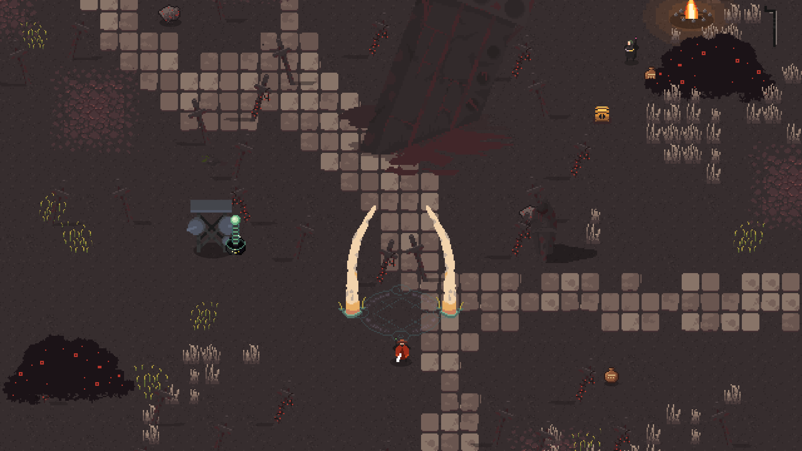
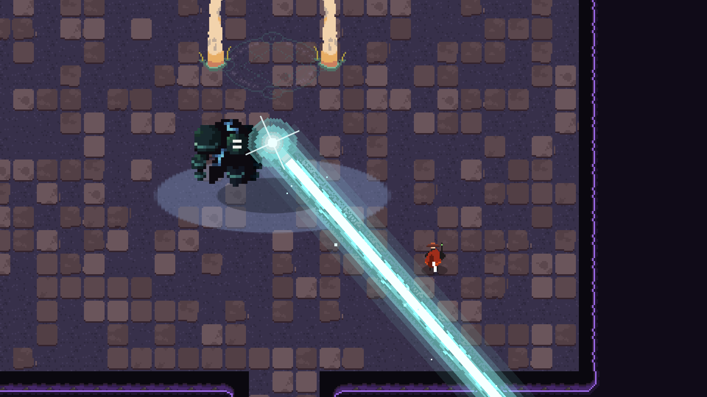
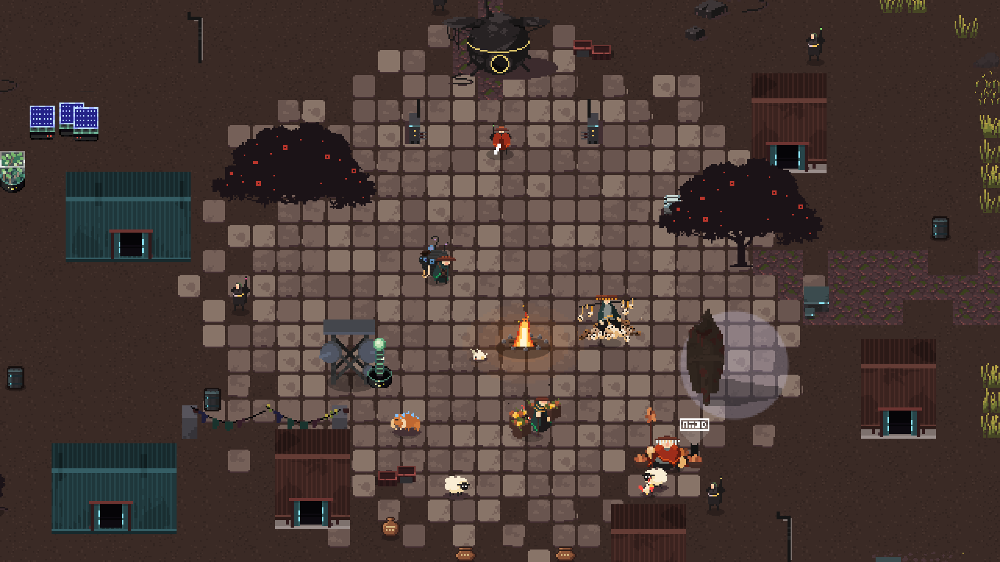
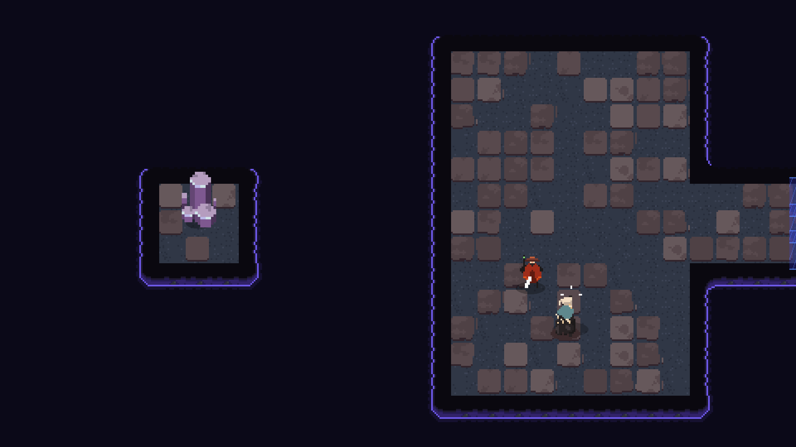
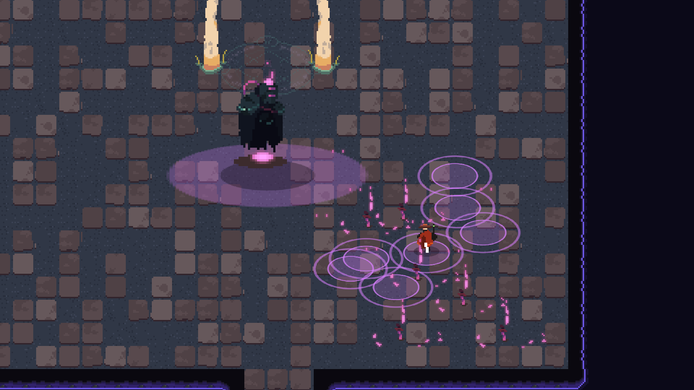
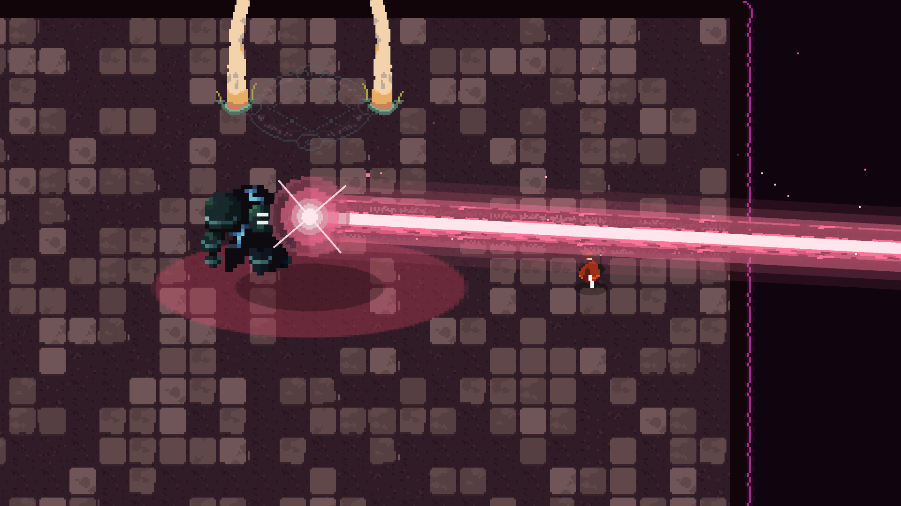

Un mundo muerto. Siete dioses dormidos. Una sola salida.
La nave colonia Perdita cayó de la oscuridad y se rompió sobre Karush, un mundo rojo de ceniza y hueso bajo un sol que nunca se pone. Eres el Wayfarer, el último de la tripulación que sigue respirando.
El núcleo de la nave está destrozado, y la única energía que queda en Karush late dentro de los Guardianes de las Reliquias: dioses que los Dustborn encerraron en máquinas hace mil años. Despiértalos. Toma sus corazones. Y descubre por qué los Dustborn prefirieron deshacerse antes que enfrentar lo que construyeron.
Un vistazo
Haz clic en una imagen para verla en grande.






Mira el tráiler
Novedades de la v0.17
Qué trae
Unas 10 a 15 horas · tres dificultades · teclado, mando, y controles táctiles en Android · el juego está en inglés
Instalación
- Windows: primero descomprime la carpeta entera y luego abre STRANDED.exe. Si aparece SmartScreen, pulsa Más información ▸ Ejecutar de todas formas.
- macOS: descomprime y, la primera vez, clic derecho en STRANDED.app ▸ Abrir, y otra vez Abrir.
- Android: abre el APK en tu teléfono y permite la instalación cuando te lo pida. Una versión nueva se instala encima de la anterior.
- Tu partida se conserva de una versión a otra, y el juego te avisa en la pantalla de título cuando sale una versión nueva.
Es un playtest: cuéntame qué te parece en los comentarios de itch.io.